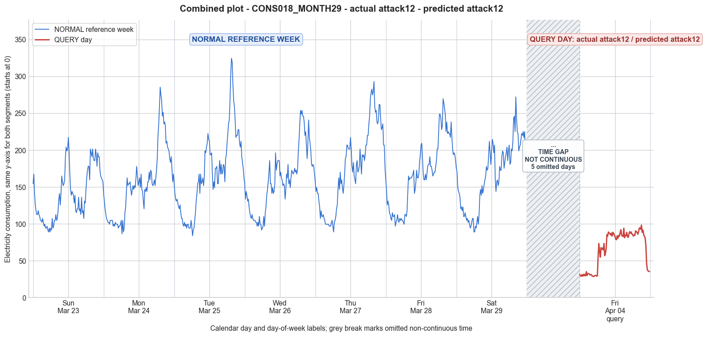

CONS018_MONTH29 · actual attack12 · predicted attack12
- Pair
- CONS018_MONTH29
- GT
- attack12
- Prediction
- attack12
- Binary GT
- attacked
- Binary Prediction
- attacked
- Source
- E010
- Parse
- stored
- Date
- 2014-04-04
- Weekday
- Friday
- Latency
- 3.65 min
- Tokens
- 12940

Final output
Classification: - Manipulated Identified Attack: - Most Likely: Attack 12 - Confidence: High - Reasoning: The query day exhibits a completely different but physically plausible consumption pattern (low overnight, morning rise, evening peak) at a much lower magnitude than any day in the reference week, especially the reference Friday (mean 66.36 vs. 167.51). The shape is not a scaled version of the reference Friday (ruling out Attack 1 and Attack 3, which would preserve or noisily distort the original trend). Attack 5 would produce a random pattern, not a smooth daily profile. Attack 12 directly explains the presence of a realistic, lower‑magnitude profile substituted from another user. Attack_Behavior_Explanation: - How consumption values are manipulated relative to the normal week: The attacker replaces the entire day’s consumption data with that of a lower‑consuming user. The query day’s profile follows a typical daily rhythm (low at night, morning ramp‑up, evening peak) but at much lower values and with a different temporal shape than the reference Friday, indicating it originates from a different household. - Impact on magnitude and trend: Both magnitude and trend are changed. Magnitude is drastically reduced (e.g., mean from ~167 to ~66, max from ~269 to ~98). The trend no longer matches the reference week’s Friday; instead, it shows a distinct, plausible daily pattern typical of another consumer. - Possible technical causes: False data injection, where the adversary intercepts and replaces the smart meter’s reported readings with pre‑recorded or synthetic data from a different, lower‑consumption meter.
Prompt
You are a domain expert in smart grid security and electricity theft analysis, with deep knowledge of non-technical loss (NTL) attack patterns in smart meters. You are given: 1. A plot of one week of original (normal) energy consumption for a smart meter, provided as context for the customer's typical consumption behavior. 2. A plot of one day of energy consumption for the same smart meter, which may or may not be manipulated. Below are common attack types, each defined by how consumption values are altered, their impact on magnitude and trend, and their possible technical causes. Attack 0: Generated by replacing all electricity consumption samples with zero values for the entire observation duration. Simulates a scenario where no energy usage is reported at all. May be caused by a total meter bypass or severe meter malfunction. Completely eliminates both the trend and magnitude of the consumption profile. Attack 1: Multiplies the actual energy consumption by a constant random value between (0,1). The lower the factor, the higher the severity. Can be triggered by meter bypass, magnetic interference, reverse current, and false data injection. The consumption trend remains the same but the magnitude is uniformly reduced. Attack 2: Generated by replacing consumption samples with zeros for a random duration. Also known as an on-off attack. Can be caused by full meter bypass, false data injection, and reverse current. Changes both the trend and amplitude. Attack 3: The actual consumption is multiplied by different random factors between 0 and 1, with a unique factor per sample. Similar to Attack 1 but the scaling factor varies per reading. Caused by meter bypass, magnetic interference, and reverse current. Changes both the trend and amplitude. Attack 4: Simulates energy theft over a randomly selected period within the observation window. All measurements in that period are reduced. Caused by meter bypass, magnetic interference, reverse current, and false data injection. Changes both the trend and amplitude. Attack 5: Each sample is replaced by a false value obtained by multiplying the average normal consumption by a random variable between 0 and 1, with a different variable per sample. Caused by false data injection. Produces a completely different pattern from the original consumption profile, changing both trend and magnitude. Attack 6: A random cut-off point is selected and all consumption values above it are replaced by that cut-off value. The attacker avoids exceeding a predefined maximum limit. Mainly caused by false data injection. Changes both the trend and amplitude. Attack 7: A random cut-off point is subtracted from each sample; if the result is negative, zero is reported. Similar to Attack 6 but replaces exceeding values with zero instead of the cut-off point. May be caused by false data injection or total meter bypass. Does not change the trend but reduces overall consumption. Attack 9: All samples are replaced by the average daily energy consumption, resulting in a flat constant profile. Easily detectable because constant consumption does not reflect normal customer behavior. Caused by false data injection. Eliminates all trends. Attack 10: Reverses the consumption pattern without reducing the total amount. Applicable when the electricity company uses time-varying pricing, allowing the attacker to shift high consumption to off-peak periods. Caused by false data injection. Changes the trend without decreasing total consumption. Attack 12: The attacker replaces their consumption pattern with that of a lower-consuming user. The legitimate user unknowingly pays the adversary's electricity bill. Caused by false data injection. Attack IEEE: For each 15-minute interval across the entire day, the consumer either reports the actual electricity consumption or substitutes it with zero. The result is a profile where some intervals reflect real consumption while others are zeroed out, creating an irregular pattern across the full day. May be caused by false data injection. Changes both the trend and amplitude. Given the two plots, determine: 1. Whether the day is attacked or original - compare the flagged day against the normal week and assess whether the consumption pattern is consistent with normal behavior or shows signs of manipulation. If the day is consistent with the customer's typical consumption behavior, classify it as original and provide no further analysis. If manipulation is detected, proceed to point 2. 2. Which attack type this most likely is - identify the single most probable attack and justify your choice based on how the flagged day deviates from the normal week. 3. The behavior of the identified attack - explain how the consumption values are manipulated, their impact on magnitude and trend, and the possible technical causes behind this type of attack. Output Format: Classification: - Original | Manipulated Identified Attack: (fill only if manipulated) - Most Likely: Attack X - Confidence: High | Medium | Low - Reasoning: Why it matches Attack X and why Attack Y and Attack Z were ruled out (list top 2 alternatives considered) Attack_Behavior_Explanation: (fill only if manipulated) - How consumption values are manipulated relative to the normal week - Impact on magnitude and trend - Possible technical causes
Reasoning content
We are asked to determine whether the query day is attacked or original, and if attacked, identify the most likely attack type. We have a reference week (7 days) and one query day (DAY_ID=5, which corresponds to Friday, April 4, 2014). Note that the reference week includes Day 5 (which was Friday in March, i.e., month 3, dow=4, dom=5). The query day is also Friday (dow=4), but in April (month 4, dom=12). So it's a Friday, but a different week. The reference week shows typical consumption for that customer, including a Friday. We need to compare the query day against the whole week, and particularly against the Friday from the reference week (Day 5) because day-of-week patterns might be similar. First, look at the statistics. Reference week: Day 0 (Sunday? Actually dow=6 is Saturday? Wait: they say dow=0..6 Mon-Sun. So dow=0 is Monday, dow=1 Tuesday, dow=2 Wednesday, dow=3 Thursday, dow=4 Friday, dow=5 Saturday, dow=6 Sunday. So: Day 0: dow=6 -> Sunday Day 1: dow=0 -> Monday Day 2: dow=1 -> Tuesday Day 3: dow=2 -> Wednesday Day 4: dow=3 -> Thursday Day 5: dow=4 -> Friday Day 6: dow=5 -> Saturday So Day 5 in the reference week is Friday. The query day is also Friday (dow=4). So we can directly compare the query day to Day 5 of the reference week. Day 5 reference: min=96.86, max=269.63, std=46.23, mean=167.51 Query day: min=28.49, max=98.29, std=24.77, mean=66.36 Clearly, the query day's consumption is much lower: mean is less than half, max is only 98.29 versus 269.63. This is a huge reduction. Could it be an attack? The query day is Friday, and the reference Friday shows typical consumption peaking in the evening up to 269. The query day has a maximum of 98.29, and an unusual pattern. Let's examine the time series of the query day: It starts with low values around 29-35 for the first few intervals (midnight to early morning). Then around interval 25-26 (maybe 6am?), there is a jump: 55.81, 73.34, 62.51... So there is a morning ramp-up, but the values remain below 100. The highest value is 98.29 near the end. The pattern shows some variation, not flat. It goes up and down, but peaks around 98. So it seems like a scaled-down version of a normal pattern? Let's compare with Day 5 reference. Day 5 reference: starts at 159.69 (midnight), drops to around 100-110 in early morning, then ramps up to 164.92 around 8am? Actually, let's align intervals. Both have 96 readings, 15-min intervals. The reference day starts high (159.69) then gradually decreases to ~96.86 around 4am? Then increases. The query day starts very low (31.58) then decreases to 28.49, then increases. So the pattern is not simply scaled-down; it's shifted downward. But the relative shape? For reference: values early morning around 100-115; for query: 30-35. That's roughly a factor of about 0.3. But the peak in reference evening is 269, while query peak is 98.29, factor ~0.36. Not constant. Let's compute ratio at different times. Alternatively, maybe it's an attack that reduces consumption overall. Could be Attack 1 (multiplication by constant factor between 0 and 1), Attack 3 (different random factor per sample), Attack 4 (reduction over a random period), Attack 6 (cut-off), Attack 7 (subtract cut-off), Attack 2 (zeros for random duration), Attack 5 (replace with random fraction of average), or Attack IEEE (zero some intervals). None of the attacks perfectly fit a simple constant scaling if the ratio varies. But let's see variation: The query day has some pattern that resembles normal consumption but with much lower amplitude and also shifted baseline. For instance, normal day has minimum ~96, query minimum ~28. So it's not just a subtraction of a constant because that would give negative values if subtracted more than 96. Here, subtracting a constant of ~70 would give min ~26, which is close to query min 28.49. But then max would be 269-70=199, not 98. So not subtraction. Multiplication by a constant: if factor=0.3, then min=96*0.3=28.8, max=269*0.3=80.7, but query max is 98. So factor would be higher for max. Not constant. Maybe it's Attack 5: replace each sample by false value = average normal consumption * random(0,1). What is average normal consumption? The weekly mean per day varies: overall average across week? Day 0:140.35, Day1:153.44, Day2:168.77, Day3:159.55, Day4:175.17, Day5:167.51, Day6:165.60. Average of these means ~161.5. If each sample is a random value between 0 and 161.5, we'd expect mean around 80.75, with range up to 161.5. The query day mean is 66.36, max 98.29, min 28.49. That could be consistent with random draws, but the pattern should be completely random, no correlation with time. However, looking at the query day sequence, it seems to have a time-of-day pattern: low at night, increasing in morning, peak in late afternoon/evening. That suggests it's not entirely random. Attack 5 says "produces a completely different pattern from the original", so it would not preserve the daily pattern. Here, there is a pattern resembling typical consumption (low at night, higher during day, peak evening). So Attack 5 unlikely. Attack 6: cut-off point, values above it replaced by cut-off. Query max is 98.29, which could be the cut-off. But then any normal value above 98.29 would be capped at 98.29. That would produce many readings at exactly 98.29 or close. In query, we see values like 98.29, 94.67, 92.61, etc., not a plateau. Only one 98.29 and a few near it. Not a clear cap. Attack 7: subtract cut-off, negative -> 0. If we subtract a value, say, 70, normal min=96.86-70=26.86, close to 28.49; normal max=269.63-70=199.63, but query max is 98.29, so not that. If subtract larger value like 170, then max would be 99.63, min would be negative -> 0. 269.63-170=99.63, 96.86-170=-73.14->0. That would give a min of 0, but query min is 28.49, not 0. So not that. Attack 3: multiply by different random factors per sample. That could produce a pattern that roughly follows the original but with varying scaling. If the random factors are between 0 and 1, and they vary, the overall magnitude is reduced but trend could be somewhat preserved if factors are not too erratic. However, the query pattern shows a fairly smooth variation: low at night, then rising, then falling a bit, then rising again. It doesn't look like random noise multiplied. It looks like a genuine consumption pattern, but just much lower. So maybe Attack 1 with a constant factor? But we saw factor isn't constant if we compare min and max. However, min in normal is 96.86, but that's the minimum for the whole day. In the query, the lowest is 28.49. If constant factor, factor = 28.49/96.86 ≈ 0.294. Then max would be 269.63*0.294=79.3, but actual max is 98.29. So not constant. Unless the query day corresponds to a different day of the week? But it's the same weekday, Friday. Could it be that the customer's consumption pattern changed legitimately? Maybe it's a holiday or something? But the problem says we are a domain expert, and we need to classify as original or manipulated. Given the dramatic drop, it's almost certainly manipulated. Let's look at other attacks: Attack 0 (all zeros) - no, not zeros. Attack 2: zeros for random duration - no zeros here. Attack 4: reduction over a randomly selected period. That could mean that for a contiguous block, values are reduced (maybe multiplied or subtracted). If only a part of the day is reduced, then the pattern might still show a normal shape. In the query, the entire day seems low. Even the morning peak is low relative to normal morning. In reference Friday, morning values around 8am (interval ~32) are around 164.92, here at similar time it's 73.34. The evening peak is 98.29 vs 269. So it's not just a period; the whole day is lower. Attack IEEE: some intervals zeroed, others actual. Here, no zeros. Attack 9: constant average - no, it's not flat. Attack 10: reverse pattern - not reversed, still has daily pattern. Attack 12: replaced with lower-consuming user's pattern - that could be plausible. The query pattern might resemble the consumption of a different customer. But we don't have other users' data. This attack is essentially a substitution. However, the instructions say we should identify the most probable attack based on the patterns we see. Attack 12 would produce a normal-looking consumption pattern but from a different user, so it might not be detectible without comparing to the specific user's history. Here, we can detect that the consumption is much lower than typical for this user, but the pattern still looks like a plausible daily profile (low at night, morning rise, evening peak). That is consistent with a lower-consuming user's pattern. However, other attacks like a constant scaling (Attack 1) would also preserve the shape, but here the scaling isn't constant. Could it be Attack 5? No, because Attack 5 would be random, not a structured daily pattern. Attack 3: varying factor per sample. If the factors vary, the pattern might still retain some shape, but it would show more noise. The query series appears fairly smooth, with gradual changes, not erratic jumps. So unlikely. Attack 6 and 7 we ruled out. What about Attack 4: reduction over a randomly selected period. If the period is the entire day, then it's like Attack 1 but maybe with a constant factor only for that period? But then it would reduce the whole day by a constant factor? Actually, Attack 4: "Simulates energy theft over a randomly selected period within the observation window. All measurements in that period are reduced." It doesn't specify how they are reduced; it says "reduced" but not by what mechanism. It could be that they are multiplied by a factor, or subtracted. Typically, it might mean that a contiguous block of time has its values lowered (maybe multiplied by a constant <1, or replaced by lower values). If the period is the whole day, then it's like a whole-day reduction. But then why would the reduction not be uniform? It says "reduced", which could be via a factor or subtraction. We need to assume typical patterns. Attack IEEE: "For each 15-minute interval across the entire day, the consumer either reports the actual electricity consumption or substitutes it with zero." That would result in some intervals with zero and some with normal values. No zeros, so no. Given the observed pattern: a normal-looking daily profile but with much lower values, and the shape seems proportionally similar but not exactly scaled. Could be Attack 12 (profile substitution) or maybe Attack 1 with a varying factor (Attack 3). But Attack 3 description: "Changes both the trend and amplitude." Because the factor varies per sample, it changes the trend (i.e., the relative shape). Attack 1: "The consumption trend remains the same but the magnitude is uniformly reduced." So if the trend is preserved, it's Attack 1. Does the query day preserve the trend? Let's compare the normalized shapes. We can normalize the reference Friday and query day by dividing each by its mean. Reference Friday mean=167.51. So normalized values: first few: 159.69/167.51=0.953; 146.60/167.51=0.875; etc. Query day mean=66.36, normalized: 31.58/66.36=0.476; 29.52/66.36=0.445; etc. That's not matching. But the mean itself is reduced, so the normalized shape is different because the baseline is different. Perhaps the reduction is not multiplicative but additive? If we add a constant offset? For reference, min~96.86, max~269.63, range~172.77. Query: min~28.49, max~98.29, range~69.8. The range is much smaller. If we subtract a constant, the range stays same. Here range reduced, so multiplicative scaling is more likely, but the scale factor isn't constant across the day. So it's not simple multiplicative. Maybe it's Attack 4 with a reduction during the entire day, but the reduction method could be something like reporting a fraction of consumption that varies. Attack 4's description is vague. Alternatively, could it be that the query day is actually original? Maybe the customer was on vacation or reduced consumption drastically? But the query day still shows a typical pattern with morning and evening peaks, just lower. That could be a legitimate low-consumption day. However, in the context of electricity theft detection, we are to determine if it's manipulated. Usually, such a large drop from the normal week would be flagged as suspicious. But the task says "If the day is consistent with the customer's typical consumption behavior, classify it as original." Here, the consumption is not consistent: the mean is 66.36 vs the typical Friday mean of 167.51, more than 60% reduction. That's a huge deviation. Also, the temporal pattern, while having peaks, is still very different in magnitude. Even the lowest day in the reference week, Day 0 (Sunday) had mean 140.35, min 89.01, max 217.28. So the query day is far lower than any day in the reference week. So it's definitely anomalous. So manipulated. Now, which attack? Attack 12: the attacker replaces their pattern with that of a lower-consuming user. This would produce a pattern that is normal for some other user, which could still have daily variations. That fits: the query day looks like a plausible daily consumption profile, just from a different household. The shape is reasonable. So Attack 12. Attack 5: completely random pattern, not plausible daily shape. So not. Attack 3: varying scaling factors would introduce randomness, but the query sequence appears smooth. Check smoothness: query day differences: 31.58->29.52 (-2.06), 29.52->29.00 (-0.52), 29.00->31.06 (+2.06), 31.06->29.00 (-2.06), 29.00->31.58 (+2.58), etc. Small steps. Then at interval 25: 29.52->55.81 (+26.29) - a big jump. That might be a morning spike. In reference Friday, the morning ramp also has a jump: at interval 25? Let's see reference Day 5 intervals: we have 96 numbers. They might align: reference Day 5 sequence: 159.69, 146.60, 125.65, 130.89, 125.65, 115.18, 112.57, 107.33, 104.71, 115.18, 109.95, ... Need to find the morning ramp. Typically, early morning is low, then around 6-8am consumption rises. In reference, the lowest values are around 96-102 (around intervals 13-24 maybe). Then ramps up. Query has a jump from 29.52 to 55.81 at interval 25. So the timing of the morning increase might coincide. That suggests the pattern is shifted in time? But both are 96 intervals starting from midnight? Possibly time zones or different daylight saving? Actually, both are from the same dataset, so time is consistent. The query day's morning rise seems to start around interval 25 (which is 06:00 if intervals start at 00:00? 25*15 min = 375 min = 6:15am). In reference Friday, let's try to locate when it rises. The reference Friday starts high (midnight 159.69) because it's late evening? Wait, normal pattern: consumption often high in evening, drops overnight, then rises in morning. In many households, peak is in the evening. In reference Day 5, the values are: start 159.69 (00:00), then decreasing: 146.60 (00:15), 125.65 (00:30), 130.89 (00:45) ... it's going down. It reaches a low around 96.86 at interval 13? Let's list the first 30 of Day 5 reference: 159.69, 146.60, 125.65, 130.89, 125.65, 115.18, 112.57, 107.33, 104.71, 115.18, 109.95, 109.95, 112.57, 96.86, 102.09, 104.71, 112.57, 104.71, 102.09, 107.33, 104.71, 107.33, 104.71, 104.71, 102.09, 99.48, 112.57, 112.57, 109.95, 117.80,... So there is a trough around interval 13 (96.86), then it oscillates and rises. The morning ramp might be around interval 31? Actually, it continues: interval 31: 143.98, 32:164.92,... so around 8am it's higher. So the pattern: values are around 100-115 during late night, then increase to ~150-160 by 8am. In contrast, query day: midnight values ~30, trough around interval 18-24 (29.00, 28.49), then rise starting interval 25 (55.81). So the timing of the trough and morning rise is similar. This suggests the underlying pattern is preserved but with different magnitude and perhaps a different baseline. It looks like a scaled-down version of a typical household's consumption, but not necessarily this household's. The shape is plausible, so Attack 12 fits: they replaced the profile with a lower-consuming user's profile. That would explain why the pattern looks normal yet different. Consider Attack 1 vs Attack 3: Attack 1 multiplies by a constant random value between 0 and 1. If the constant is, say, 0.4, then the whole day is scaled by 0.4. But as we saw, min 96.86*0.4=38.7, max 269.63*0.4=107.85. That would give min~38.7, max~107.85, mean~67.0. That's actually very close to query: min 28.49 vs 38.7, max 98.29 vs 107.85, mean 66.36 vs 67.0. The min is lower by 10, max lower by 10, so not perfect but maybe the scaling factor isn't exactly constant but the attack definition says "constant random value" meaning one constant value chosen randomly. So it's a single factor applied to all samples. If factor=0.4, then the predicted query would be exactly 0.4*reference Friday. Let's compute 0.4*reference Friday for a few points: 0.4*159.69=63.88, actual 31.58; 0.4*146.60=58.64, actual 29.52; 0.4*125.65=50.26, actual 29.00; 0.4*130.89=52.36, actual 31.06; not matching. The actual values are much lower than a constant scaling of the reference Friday would give. What if the reference day to compare is not Day 5 but another day? Maybe the attacker used a different day's pattern? Attack 1 uses "the actual energy consumption" of that day, so if the day was originally similar to the reference Friday, then scaling would be proportional. But if the day's actual consumption was different (because it's a different Friday), the normal unseen consumption for that query day might have been different. But we only have the reference week as the typical behavior. The problem says the first plot is one week of original (normal) energy consumption, providing context for typical behavior. The second plot is one day that may or may not be manipulated. So we are to compare the flagged day against the normal week. The query day is a Friday, so we compare to the Friday in the normal week. That's the most direct. A constant scaling would preserve the shape exactly relative to the normal Friday. Does the query day shape match the normal Friday shape? If we rescale the query day to have the same mean, we can compare shapes. Let's compute the ratio of query to reference for each interval? Not possible without alignment, but we can check if the pattern of peaks and valleys aligns. The reference Friday has a bimodal pattern? Actually, it seems to have a morning peak around 8-9am (164.92 at interval 32), then a dip, then an evening peak (269.63 at interval 76? Actually, we have full data: let's extract reference Day 5 fully: I'll list them with indices maybe. But from the raw data: interval 31: 143.98, 32:164.92, 33:159.69, 34:162.30, 35:162.30, 36:162.30, 37:164.92, 38:167.54, 39:172.77, 40:141.36, 41:146.60, 42:157.07, 43:172.77, 44:162.30, 45:162.30, 46:167.54, 47:183.25, 48:193.72, 49:206.81, 50:209.42, 51:188.48, 52:167.54, 53:159.69, 54:159.69, 55:167.54, 56:159.69, 57:167.54, 58:178.01, 59:180.63, 60:180.63, 61:191.10, 62:178.01, 63:178.01, 64:172.77, 65:164.92, 66:167.54, 67:170.16, 68:170.16, 69:178.01, 70:185.86, 71:201.57, 72:201.57, 73:225.13, 74:248.69, 75:248.69, 76:243.46, 77:227.75, 78:232.98, 79:269.63, 80:264.40, 81:256.54, 82:248.69, 83:225.13, 84:238.22, 85:222.51, 86:225.13, 87:222.51, 88:222.51, 89:217.28, 90:238.22, 91:217.28, 92:201.57, 93:193.72, 94:196.34, 95:193.72, 96:185.86. So reference Friday: peaks at intervals 32 (~164.92) and then around intervals 49-50 (~206-209), then huge peak at interval 79 (269.63). It's a bit irregular but generally daytime higher than night, evening peak highest. Query day: let's list intervals with approximate indices (0-95): 0:31.58,1:29.52,2:29.00,3:31.06,4:29.00,5:31.58,6:29.52,7:31.58,8:29.52,9:35.19,10:30.03,11:32.61,12:32.61,13:32.09,14:30.55,15:31.06,16:31.06,17:29.00,18:29.00,19:28.49,20:29.52,21:30.03,22:30.03,23:29.00,24:29.52,25:55.81,26:73.34,27:62.51,28:54.78,29:67.67,30:65.61,31:67.15,32:64.57,33:73.34,34:56.84,35:59.93,36:67.15,37:85.37,38:83.31,39:88.99,40:87.44,41:86.92,42:84.86,43:87.44,44:83.31,45:88.48,46:87.44,47:84.86,48:82.79,49:79.01,50:78.50,51:83.82,52:80.56,53:84.34,54:83.31,55:87.96,56:92.09,57:84.86,58:83.31,59:82.79,60:94.16,61:81.07,62:84.86,63:83.82,64:88.48,65:82.28,66:81.59,67:86.41,68:89.51,69:87.44,70:88.99,71:85.89,72:85.89,73:83.31,74:84.86,75:84.34,76:90.54,77:89.51,78:88.48,79:85.89,80:88.99,81:94.16,82:94.67,83:92.61,84:98.29,85:88.48,86:91.58,87:85.89,88:82.79,89:81.07,90:70.76,91:46.53,92:37.76,93:36.22,94:35.70,95:35.19. Query day: It has a minor peak around interval 25-37 reaching 85.37, then a dip, then another peak around 60 (94.16), then a dip, then highest at 84:98.29, then falls. So it has a morning increase, a midday plateau, and an evening peak. That resembles a typical residential pattern but much lower magnitude. In reference Friday, the pattern is: night high? Actually reference starts high because it's midnight, which in many homes consumption might still be elevated from evening, then it drops overnight, then morning rise. Here query starts low, which is more typical for overnight. Reference Friday starts at 159.69 at midnight, which is unusual for a home if people are asleep. But maybe the customer has high baseload? That suggests reference Friday might have had some activity late night. The query day starts low, which is more typical. So perhaps the query day pattern is that of a different user who goes to bed earlier and has lower baseload. That aligns with Attack 12. Attack 12: replaces their consumption pattern with that of a lower-consuming user. So the query day would be a legitimate pattern from a different household, which may not match the reference week's day-of-week pattern. That is exactly what we see: the pattern looks realistic but belongs to a different consumption class. Could it be Attack 5? If Attack 5, each sample is replaced by random value between 0 and average normal consumption. The average normal consumption is around 161.5 as computed. So each sample would be a uniform random in [0, 161.5]. That would produce a noisy signal with no clear pattern. The query day has clear temporal structure, so not. Attack 3: varying random factors per sample. If the factors are random, the resulting series would be noisy, not smooth. For example, adjacent samples would jump around due to independent randomness. But here the series has smooth transitions: 55.81 to 73.34 is a jump, but then gradually changes. Could still be possible if the random factors are applied but the underlying consumption itself is smooth, so multiplied by random noise would still show some smoothness if the noise isn't too extreme. However, Attack 3 is described as "different random factors between 0 and 1, with a unique factor per sample." That implies completely independent scaling per sample, which would likely introduce high-frequency noise. The query day does not look noisy; it looks like a typical consumption curve. So unlikely. Attack 4: reduction over a random period. If the entire day is reduced, it could be through multiplication. But then it would be similar to Attack 1 but potentially with a factor that is not constant if the reduction method is not specified. But usually such attacks are a constant factor during the attack period. And it says "All measurements in that period are reduced." That could mean they are multiplied by a constant less than 1. So again, would produce a scaled version. But we already saw constant scaling of reference Friday doesn't match. Attack 6: cut-off. Query max is 98.29. If we cap at around 98, we'd expect many samples exactly at 98.29 or 98. Not visible. Thus Attack 12 seems most plausible. It directly accounts for the observed pattern: a completely different but realistic consumption profile, not derived from the original day's consumption via simple transformation. The alternative Attack 3 might be considered, but the smoothness argues against it. Attack 1 also doesn't fit. So I'll go with Attack 12. Confidence: High, because the query day pattern looks like a plausible, smooth consumption profile typical of a lower-consuming household, and it doesn't show signs of random manipulation or simple scaling of the reference Friday. Now, output format. Classification: Manipulated Identified Attack: Most Likely: Attack 12 Confidence: High Reasoning: The query day exhibits a completely different consumption pattern that resembles a realistic daily profile (low at night, morning and evening peaks) but at a much lower magnitude than any day in the reference week. The pattern is not a simple scaling or random distortion of the reference Friday; it appears to be a normal profile from a lower-consuming user, consistent with Attack 12 where the adversary substitutes their own consumption data with that of another user. Other attacks were ruled out: Attack 1 (constant scaling) would preserve the exact shape of the reference Friday, but the shapes differ; Attack 3 (per-sample random factor) would introduce noise and alter the trend, whereas the query day remains smooth and physically plausible. Attack_Behavior_Explanation: - How consumption values are manipulated relative to the normal week: The attacker replaced the entire day's consumption data with that of a different, lower-consuming user. This results in a profile that has its own distinct shape, timing, and magnitude, unrelated to the customer's normal consumption pattern. - Impact on magnitude and trend: Both magnitude and trend are changed. The magnitude is substantially lower (mean ~66 vs. typical Friday mean ~167), and the trend follows a different daily rhythm (e.g., lower overnight, more pronounced morning ramp, different peak timings). - Possible technical causes: False data injection, where the attacker intercepts and replaces the meter's reported data with pre-recorded or synthetic data from another meter. That's the answer.